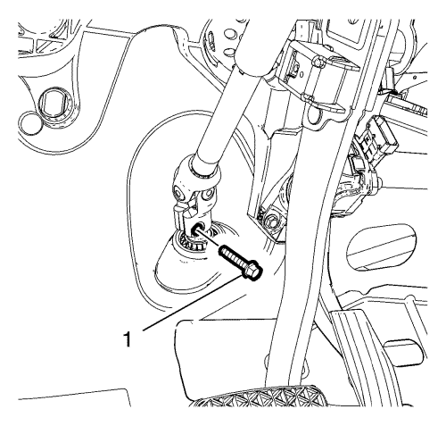
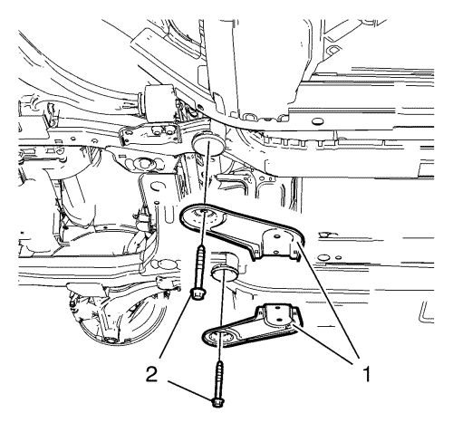
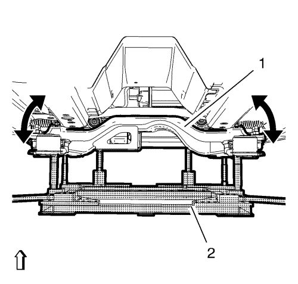
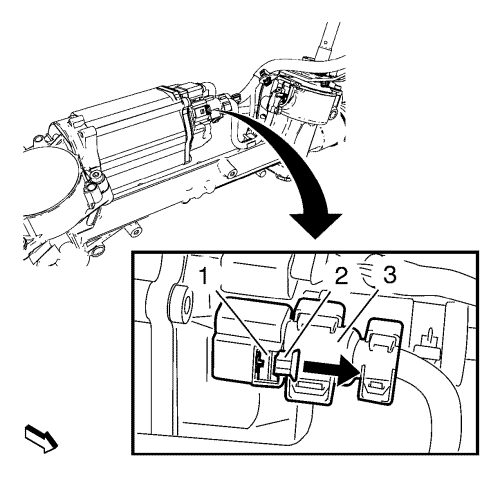
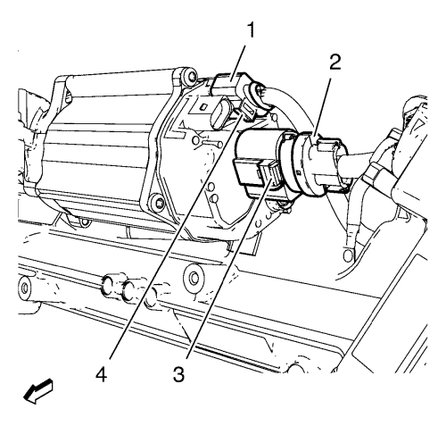
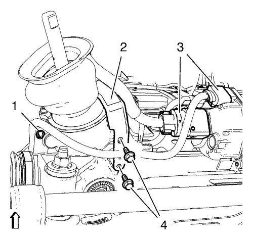
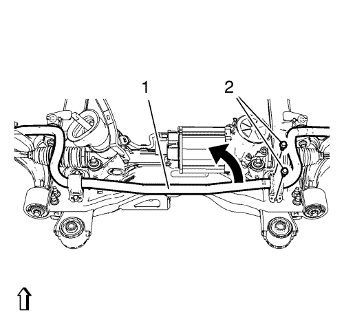
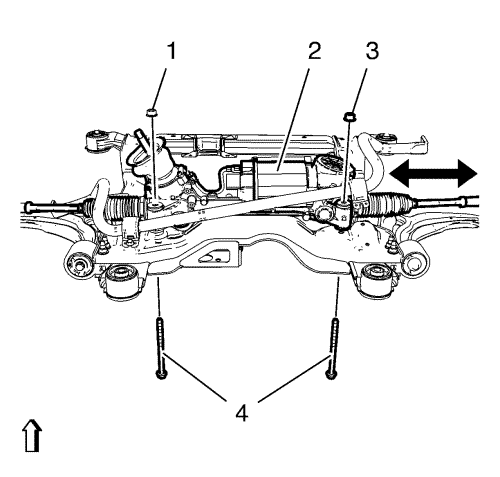

Sustitución del mecanismo de la dirección — Dirección asistida electrónica
Herramientas especiales
| • | CH-904 Bastidor inferior |
| • | EN-45059 Kit de goniómetro de par de apriete |
| • | CH-49289 Adaptador de centrado |
Si desea informarse sobre herramientas regionales equivalentes, consultar Herramientas especiales .
Procedimiento de desmontaje
- Desconecte el cable negativo de la batería. Consultar Desconexión y conexión del cable negativo de la batería .
- Gire las ruedas delanteras hasta la posición recta y asegúrese de que el volante no se mueve.

- Desmonte el perno inferior del árbol intermedio de la dirección (1).
- Desmonte el eje intermedio de la dirección del mecanismo de la dirección.
- Elevar el vehículo y soportarlo de manera segura. Consultar Elevación del vehículo con un gato .
- Desmonte los conjuntos de neumático y llanta. Consultar Desmontaje y montaje de la rueda y el neumático .
- Desmonte el aislamiento del compartimento delantero, si el vehículo lo posee. Consultar Sustitución del aislante del compartimento delantero .
- Desmonte la pantalla del motor, si está disponible. Consultar Sustitución del protector del motor .
- Desmonte el tubo de escape delantero. Consultar
Sustitución del tubo de escape delantero : 2.0 L diesel LNP → LDE,LLU,LXT,LXV,L2W,2H0 .
- Afloje de la mangueta la barra de acoplamiento del varillaje de la dirección. Consultar Sustitución la barra de acoplamiento exterior del varillaje de la dirección .

- Desmonte la tuerca de eje de varillaje del estabilizador inferior (2) a ambos lados.
- Desmonte el eslabón del eje del estabilizador (1) de este eje.
- Desmonte el eje de la barra estabilizadora (1) del estabilizador.

- Desmonte las 2 sujeciones (1) de la cubierta lateral del motor a ambos lados.

- Desmonte las 4 sujeciones (1) de la cubierta frontal del compartimento del motor.

- Desmonte los pernos delantero (1) y trasero (2) del soporte del alojamiento del cambio.

- Retire los 2 pernos del bastidor de la suspensión trasera (2).
Desmonte los refuerzos del bastidor trasero (1).
- Monte el adaptador CH-49289; para la instalación utilice el manual de montaje que se adjunta.

- Coloque y ajuste el elevador hidráulico en conexión con el bastidor CH-904 y el adaptador CH-49289 (2) en el bastidor de suspensión (1). Doble la cubierta frontal a un lado.
- Baje el bastidor de suspensión máx. 55 mm (2,165 pulg.).

Nota: Los seguros del conector tienen un acceso difícil
- Desconectar el conector eléctrico (3).
| 21.1. | Suelte el bloqueo (2) moviéndolo en la dirección de la flecha, usando un destornillador adecuado. |
| 21.2. | Empuje el trinquete de bloqueo (1) y tire del conector eléctrico para sacarlo usando un destornillador adecuado. |

- Desconectar el conector eléctrico (2).
| 22.1. | Levante cuidadosamente el trinquete de bloqueo (3) usando un destornillador en ángulo. |
| 22.2. | Tire del conector eléctrico para sacarlo (2). |
- Desconectar el conector eléctrico (1).
| 23.1. | Levante cuidadosamente el trinquete de bloqueo (4) usando un destornillador en ángulo. |
| 23.2. | Tire del conector eléctrico para sacarlo (1). |

- Desconecte con cuidado los 2 enchufes del mazo de cables (3) del mecanismo de la dirección con la herramienta apropiado.
- Desmonte los 2 pernos de soporte del mazo de cables (4).
- Desmonte el soporte (2) del vehículo.
- Desmonte el seguro del mazo de cables (1) del mecanismo de la dirección.

- Desmonte y DESECHE los 2 pernos de la abrazadera del aislante (2) del árbol estabilizador delantero (1).
Suspenda el eje estabilizador (1) en la carrocería.

- Desmonte y DESECHE los 2 pernos del mecanismo de la dirección (4) y las tuercas (2, 3) del bastidor de suspensión delantero.
- Retire cuidadosamente el mecanismo de la dirección (2) a través del alojamiento de la rueda derecha.
- Sustituya las piezas del conjunto si fuera necesario:
Procedimiento de montaje
Atención: Asegúrese de que la junta de la columna de dirección está instalada correctamente en la carcasa del piñón de la cremallera del mecanismo de la dirección. El labio de sellado DEBE descansar uniformemente sobre la superficie de la cubierta de la columna de dirección inferior. Para instalar la junta con facilidad, aplique jabón líquido al labio de sellado. Tras la instalación, verifique que el labio de sellado no sobresale en el interior del vehículo. Una instalación incorrecta podría dar como resultado un rendimiento de sellado pobre y la intrusión de agua dentro del vehículo.
Nota: Compruebe si el cableado se ha conducido bien para garantizar un montaje correcto.
- Inserte cuidadosamente el mecanismo de la dirección (2) a través del alojamiento de la rueda derecha y colóquelo en la posición de montaje.
Precaución: Consulte Precaución con las fijaciones en la sección Prólogo
- Apriete los NUEVOS pernos (4) y tuercas (1, 3) del mecanismo de la dirección a 110 N·m (81 lib. pie) + 150° a 165°, utilizando el sensor EN-45059.
- Monte y apriete los 2 pernos de soporte del mazo de cables (4) a 9 N·m (80 lib. pulg.).
- Apriete el seguro del mazo de cables (1) al mecanismo de la dirección.
Nota: Los seguros del conector tienen un acceso difícil.
- Emborne el conector eléctrico (1) hasta notar que encaja.
- Emborne el conector eléctrico (2) hasta notar que encaja.
Nota: Los seguros del conector tienen un acceso difícil.
- Emborne el conector eléctrico (3) hasta notar que encaja.
- Empuje el bloqueo hacia atrás (2) en la dirección opuesta a la flecha hasta notar que encaja.
- Coloque el eje estabilizador (1) y el soporte en el marco de la suspensión.
- Monte y apriete los NUEVOS pernos (2) de la abrazadera del aislador del eje estabilizador derecho a 22 N·m (16 lib. pie) + 30°.

- Saque los pernos de posicionado (1) del adaptador CH-49289.
- Eleve el bastidor (1) con cuidado, usando el adaptador CH-49289 (2).
Nota: NO reutilice tornillos viejos
- Monte los refuerzos (1) del bastidor.
- Monte los 2 pernos del marco de suspensión trasero (2) y apriételos a 160 N·m (118 lib. pie).
- Monte el perno (1) del alojamiento delantero del cambio y apriételo a 58 N·m (43 lib. pie).
- Monte el perno (2) del soporte del alojamiento trasero del cambio y apriételo a 100 N·m (74 lib. pie).
- Monte y apriete las 2 sujeciones (1) de la cubierta lateral del motor a ambos lados.
- Monte y apriete las 4 sujeciones (1) de la cubierta frontal del compartimento del motor.
- Monte el aislamiento del compartimento delantero, si el vehículo lo posee. Consultar Sustitución del aislante del compartimento delantero .
- Monte la pantalla del motor, si está disponible. Consultar Sustitución del protector del motor .
- Monte el tubo de escape delantero. Consultar
Sustitución del tubo de escape delantero : 2.0 L diesel LNP → LDE,LLU,LXT,LXV,L2W,2H0 .
- Apriete la mangueta la barra de acoplamiento del varillaje a la dirección. Consultar Sustitución la barra de acoplamiento exterior del varillaje de la dirección .
- Monte y apriete la tuerca de eje de varillaje estabilizador inferior (2) en ambos lados a 35 N·m (26 lib. pie).
- Bajar el vehículo.
- Monte el perno del árbol de dirección intermedio y apriételo hasta 34 N·m (25 lib. pie).
- Instalar los conjuntos de rueda y neumático. Consultar Desmontaje y montaje de la rueda y el neumático .
- Conecte el cable negativo de la batería. Consultar Desconexión y conexión del cable negativo de la batería .
- Compruebe y ajuste la alineación de las ruedas. Consultar Medición de la alineación de las ruedas .
- Centre el sensor de ángulo de giro y programe las paradas de tope. Consultar Calibración del módulo de control de la dirección asistida .
- Programe el módulo de control de la dirección asistida. Consultar Programación y configuración del módulo de control de la servodirección .
- Programe la memoria volátil. Consultar Programación de la memoria volátil .
| © Copyright Chevrolet. All rights reserved |